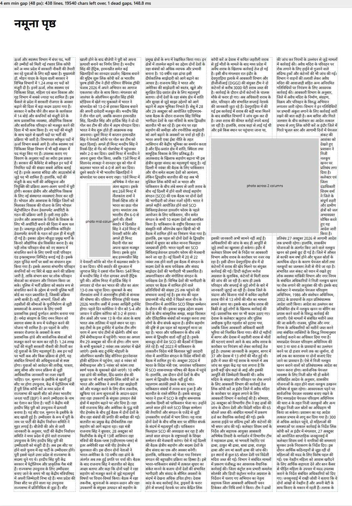
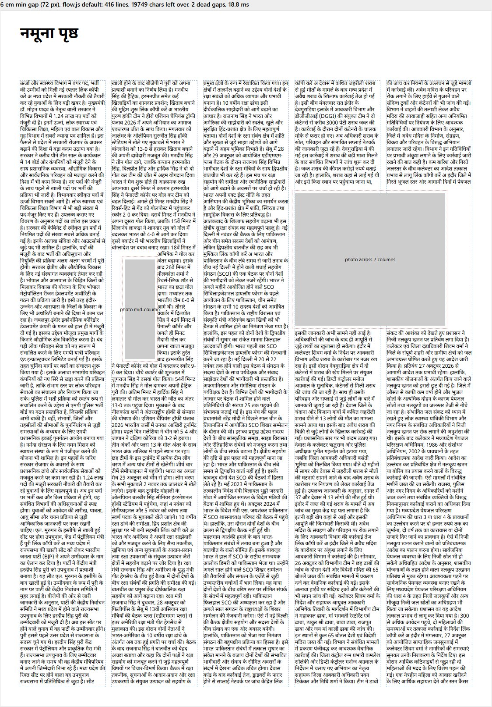
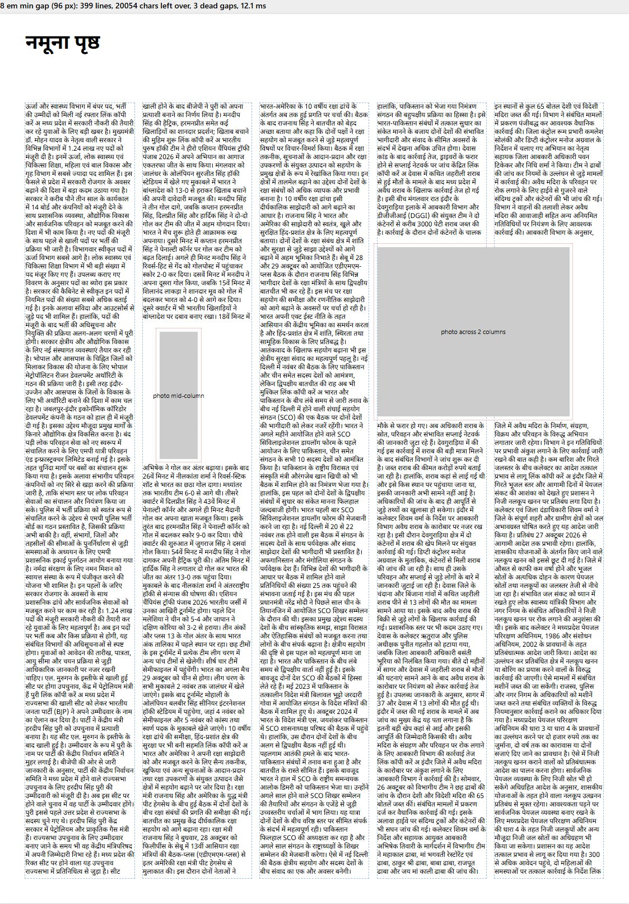

Text set around a photo inside column 2 and a photo across columns 4-5. At 4 em text squeezes into the narrow strip in column 5; at 6 em (chosen) that strip stays empty; at 8 em the gap beside the column 2 photo stays empty too.
Generated 2026-10-29 from scripts/preview.mjs (A3, 5 columns, real Hindi copy). Click an image for full size.


